7
From food production
to food security
Beneath the clear sky there lies
the green field. How exciting it to
see the crops in the green paddy
field nodding in the breeze...Since it’s
a holiday, my sister and I went to the
farm with my father and mother. Not
only paddy but vegetables are also
cultivated nearby. There are almost all
vegetables like eggplant, brinjal, yard
long beans, snake gourd, lady’s finger,
spinach, yam, sorghum etc. to harvest.
I was amazed at the sight of the
garden ready to be harvested. Today
we returned home with a lot more
than usual harvest. My father always
cultivate almost all the things we need
as food. As we got more than usual, my
mother gave some to Keerthi’s house
and sold the rest in the market.
Fig. 7.1
Page 94
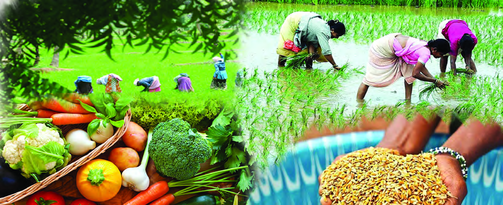
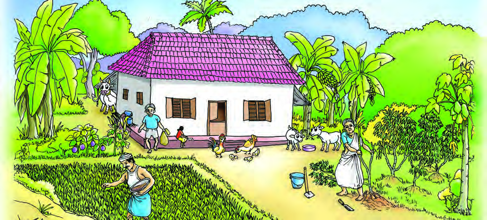
Page 95
95
From food production to food security
You have read an excerpt from Neetu’s diary.
What kind of food-crops do they cultivate for daily purpose?
l
l
l
l
l
l
How is surplus production used?
l
l
What are the benefits of such farming?
l
l
Agriculture has played a crucial role in transforming human beings from a hunter-
gatherer to a modern man. The necessary systems for social life such as family,
community, village and town emerged with the begining of agriculture. Over a
period of time, man shifted from subsistence-based agriculture to market-based
agriculture. Let’s get to know the farming methods adopted by man over the years.
Origin of Agriculture
Nomadic man began farming around 7000 BCE. Humans
started farming at different times in Mesopotamia, Turkey,
Egypt, Western Asia and Europe.
Around 3000 BCE, an agrarian culture developed in India along
with the Indus Valley Civilization. Cereals such as wheat, barley
etc were cultivated in Mohenjo-Daro and Harappa, the twin cities
situated along the banks of river Indus. Agriculture started much
later in South India.
Subsistence Farming
This is the method in which farmers produce and use only the products required
for their sustenance. Obtaining profit is not the primary objective of this method.
Page 96
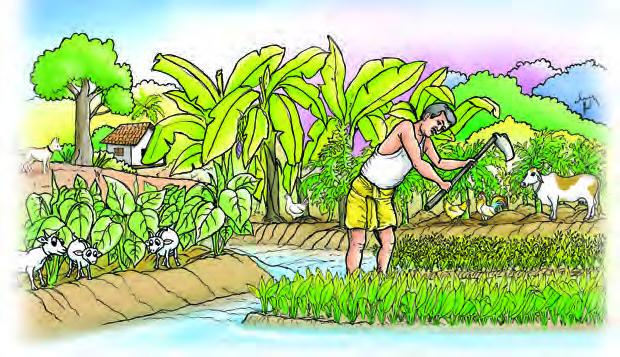
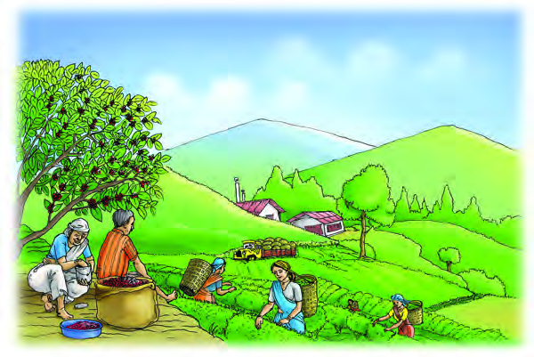
- Part 1
96
VII
Social Science
However, in some circumstances, the surplus agricultural products are sold to fulfil
other needs. Traditional agricultural tools are mostly used in this farming.
Mixed Farming
Mixed farming is the simultaneous cultivation of more than one crop in a given plot
of land. Along with this, livestock rearing, poultry farming, fish farming etc. can
also be combined. What are the benefits of this form of farming?
l
Livestock feed comes from agriculture
l Manure required for
agriculture is also
obtained from live
stock
l The cost of produc
tion will be relative
ly low
l
l
Find out more and com
plete the list.
Cultivation of Plantation Crops
With the arrival of the British, the farmers who traditionally cultivated
paddy and other food crops started cultivating plantation crops like tea, coffee,
cloves, cardamom, and pepper in large areas. In the wake of the Industrial Revolu
tion, European countries,
including Britain, were in
need of large quantity of
agricultural raw materials.
For this, they promoted
plantation crops in the co
lonial countries from the
beginning of the 19th cen
tury. Long-term income
and relatively low cost of
production are the char
acteristics of this farming
method.
Fig. 7.2
Fig. 7.3
Page 97
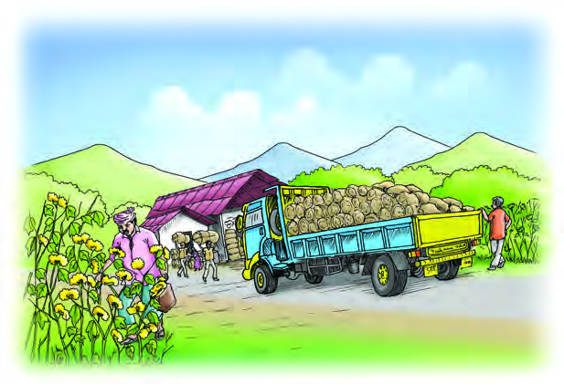
97
From food production to food security
Cultivation of Commercial Crops
Cultivation of commerical crops is the large-scale production of agricultural prod
ucts on commercial basis. The role of commercial crop farming is significant in
providing agricultural
raw materials to indus
tries. It also requires
high capital investment
and the use of modern
technology.
Rubber,
sugarcane, cotton, jute
etc. are examples of
commercial crops.
Now that you have
learned about the dif
ferent types of farming
methods in our country,
expand the below list by
adding more features.
Subsistence
Farming
Mixed
Farming
Cultivation of
Plantation Crops
Cultivation of
Commercial Crops
l Production
for own
consumption.
l Cultivation is
possible even
in small plot
of land.
l
l
l The same
fertilizer can
be used for
multiple crops.
l Lower cost of
production.
l
l
l Cost of
production is
relatively low.
l Large scale
production.
l
l
l High capital
investment.
l Provides raw
materials.
l
l
Fig. 7.4
Page 98
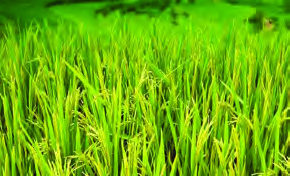
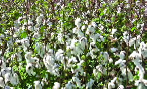
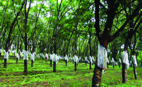
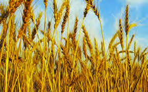
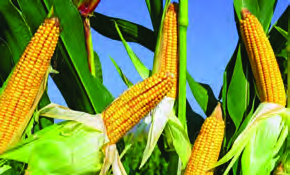
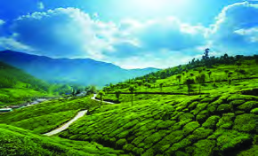
- Part 1
98
VII
Social Science
Agriculture – for Food and Income…
Fig. 7.5
Which of the crops seen in the picture are used for food?
l
l
l
Which are the other crops?
l
l
l
Agricultural crops are broadly classified into food crops and cash crops. Food
crops are crops that can be used as food, whereas, crops used for commercial and
industrial purposes are called cash crops.
Find the crops of our country and complete the list.
Food crops
Cash crops
l Rice
l Cotton
l Wheat
l Rubber
l
l
l
l
l
l
Page 99

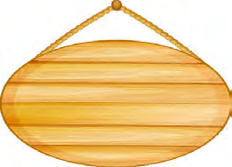
99
From food production to food security
From the table given below you can understand which crops grow in
which states. Identify those states on the map and colour them.
Crops
States
Wheat
Uttar Pradesh, Punjab, Madhya Pradesh and Haryana
Cotton
Maharashtra, Gujarat, Telangana and Rajasthan
Rice
West Bengal, Tamil Nadu, Andhra Pradesh and Bihar
Wheat
Cotton
Rice
India is characterised by a wide variety of crops. Let us see the favourable
geographical factors for the cultivation of different crops in India.
Fertile
soil
Favourable
weather
Irrigation
facility
Didn’t you get acquainted with the agricultural seasons of our country in the
previous chapter? List them out.
l
l
l
Page 100

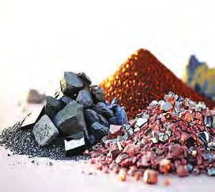
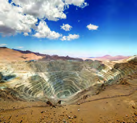
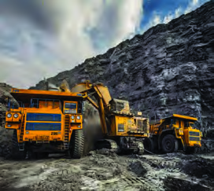
- Part 1
100
VII
Social Science
Can all crops be grown everywhere? Why? Make a note.
Agriculture and Agro-based Industries
Agro-based industries are industries that depend and function on agricultural
products. Cotton, an agricultural product, is the raw material for the textile
industry. So, the textile industry is an example for Agro-based Industry. Similarly,
agricultural products like rubber and sugarcane are used as raw materials for
various industries.
Find more Agro-based industries that use agricultural products as raw materials
and add them to the list.
Agricultural products
Industry
l Cotton
l Textile industry
l Sugarcane
l Sugar industry
l
l
Through Mineral Wealth...
Fig. 7.6
See the above images of minerals and areas where minerals are mined
l What are Minerals?
l Where do we get these from?
l What is the use of these? Let’s have a quest...
Minerals are metallic and non-metallic compounds found in the Earth’s crust.
Hematite, Magnetite, Calamine, Bauxite and Cinnabar are metallic minerals. Many
of these are used in the industrial manufacture of metals.
Page 101
101
From food production to food security
Mica, Diamond, Silica (Sand) etc. are non-metallic minerals, while Coal and
Petroleum are fuel minerals.
Mineral-based industries are those that utilise minerals as major raw materials.
Iron ore industry is the largest mineral-based industry in the country. It is the
backbone of the industrial sector and is known as the Primary Industry.
Important mineral-based industries.
l Iron and Steel industry
l Copper industry
l Aluminium industry
l
l
What are the following minerals used for? Find their usages and complete the list.
Minerals
Usage
Hematite
Manufacture of iron bars
Silica (sand)
l
Bauxite
Aircraft and electrical equipment
Diamond
l
Coal
Railway, Iron and Steel production
Petroleum
l
Green Revolution
The pre-independent British land tax system pushed the famers to
indebtedness, while their neglect of food crops led to food shortage.
Limited infrastructure in the post-independence agricultural sector
and outdated technologies contributed to a decline in agricultural
productivity.
Page 102
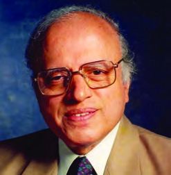
- Part 1
102
VII
Social Science
Above mentioned are some of the problems faced by the Indian agriculture sector
during the pre-independence and post-independence period. What are the reasons
for this?
l The land tax system implemented by the British
l Limited infrastructure
l
l
At the time of our independence, the agricultural sector was facing various problems.
To solve the crisis, Land Reforms and Green Revolution were implemented in
independent India.
As part of the Land Reform, a limit was set for the possession of land a person
could own. The land above that limit was known as surplus land. It was taken over
by the government and distributed to the landless peasants and tenants. As a result,
agricultural production increased. Kerala became a model for India by becoming
one of the first states to implement the Land Reforms Act.
The Green Revolution was a programme that massively increased the production
of food grains using high-yielding seeds, fertilizers, pesticides, new technologies,
loans at low interest rates and scientific irrigation. Among food grains, the result
of Green Revolution was first visible in wheat production. Hence it is also called
‘Wheat Revolution’.
The Father of the Indian Green Revolution Dr. M. S. Swaminathan was born on
August 7, 1925, in Kumbakonam, Tamil Nadu. He
served as the first Director of the Indian Council of
Agricultural Research. Though 70% of the population
were farmers, our country was still importing food
grains. To find a solution to this problem, Dr. M.S.
Swaminathan, in collaboration with Norman E.
Borlaug implemented Green Revolution. As a result,
production increased by five million tonnes over the
previous harvest. Following this, India became self-
sufficient in food production. He played the leading
role in these achievements and was honoured by the Nation with Padma Shri,
Padma Bhushan and Bharat Ratna. He passed away on 28 September 2023 in
Chennai.
Fig. 7.7
Dr. M.S. Swaminathan
Page 103
103
From food production to food security
Two Faces of the Green Revolution
Benefits
Increase in the production of
food grains.
Ensured self-sufficiency in food.
The price of food grains
dropped.
The black marketing and
hoarding of food grains
declined.
Limitations
Due to excessive use of
water, groundwater level
decreased drastically
Excessive use of fertilizers
and pesticides reduced
natural fertility of the soil.
Discuss and make note on how the Green Revolution helped to
eradicate food shortage and poverty in India.
Norman E. Borlaug
Norman Ernest Borlaug is the father
of the Green Revolution, that saved
thousands of people from starvation
around the world. He was born on 25 March
1914, in USA and believed that freedom from
hunger was the first step towards peace. He
received the Nobel Peace Prize in 1970.
Fig. 7.8
Poverty means...
Two friends reached his home in search of him. They could not see
him at home. No one in the family knew where he went... At last they
entered the room and searched. The boy was crouching under the bed
doing maths on a slate. They asked, can’t you do this on paper...
“My father is struggling to provide me food. How can he buy paper for
me?” Those friends were deeply hurt by his answer.
Source: Indian Scientists by Cheppad Bhaskaran Nair
Page 104

- Part 1
104
VII
Social Science
You have read an excerpt from the biography of Srinivasa Ramanujan, an Indian
mathematician who has been described as a ‘mathematical wizard.’
Many people in our society are unable to meet even their basic needs. What can we
call the condition of not being able to fulfil such needs?
l
Poverty is a condition in which basic human needs such as food, clothing, shelter,
education and health are not accessible as per the requirement. The poor are those
who do not have the access to income or property to meet even their basic needs.
Poverty Line
A poverty line is an imaginary line that divides the population
of a country into those who are poor and not.
Poverty in our country is calculated based on one’s income and the calories obtained
from the food. Let us examine the reasons that lead people to poverty.
Common
causes of poverty
Unemploy
ment
Inequality
of oppor-
tunity
Price
rise
?
?
?
Over
pop-
ulation
Indeb-
tedness
Complete the sun diagram by finding out other causes that lead to
poverty.
Page 105
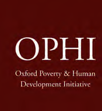
105
From food production to food security
Multidimensional Poverty Index
The Multidimensional Poverty Index (MPI) is a new method developed to
measure global poverty. It was jointly prepared by the Oxford Poverty and Human
Development Initiative (OPHI) and the United Nations Development Programme
(UNDP). Multidimensional poverty
is calculated by assessing twelve
indicators across three dimensions:
health, education and standard of living
of the members of a household.
Didn’t you understand that income is not
the only criterion for measuring poverty
according to the Multidimensional
Poverty Index? Multidimensional poverty is calculated by taking into account how
much each individual and family can achieve in terms of health, education and
standard of living.
l Nutrition
l Child and
adolescent
mortality rates
l Maternal health
l School education
l School attendance
l Cooking fuel
l Sanitation
l Drinking water
l Electricity
l Housing
l Assets
l Bank accounts
Health
Education
Standard of Living
The graph shows the poverty level of the States and Union Territories of our
country for the years 2015-16, 2019-21 as per the Multidimensional Poverty Index
approved by NITI Aayog.
Page 106
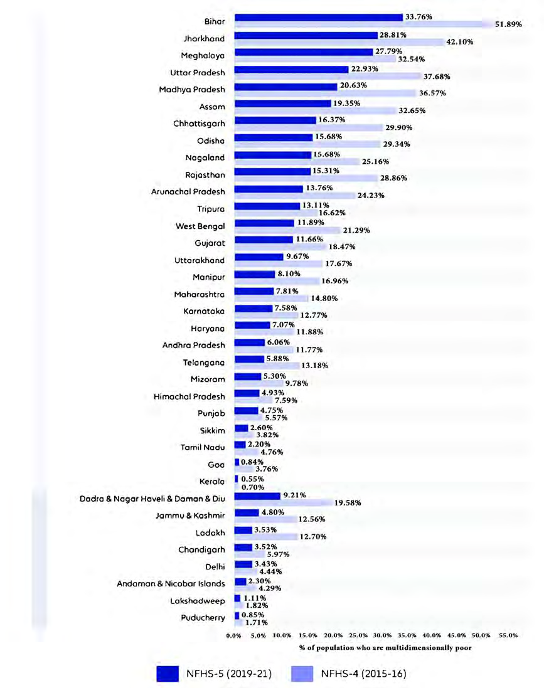
- Part 1
106
VII
Social Science
Observe the figure given above.
1. Find Kerala’s position among Indian states according to the Multidimensional
Poverty Index.
Fig. 7.9
Union Territories
States
Page 107
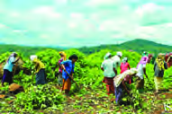
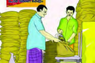
107
From food production to food security
2. Find out how much of Kerala’s poverty has decreased in 2019-2021 compared
to 2015-2016.
3. Find out how Kerala has achieved this and make a note.
To get out of poverty...
The Central and State governments are implementing many poverty alleviation
schemes to eradicate the poverty prevalent in our country. These projects can be
classified into three categories.
Project Section
Name of the project
Objectives of the project
Self-Employed
Wage Employment
Schemes
l Mahatma Gandhi
National Rural
Employment Guarantee
Scheme
l Pradhan Mantri Rozgar
Yojana
Adults with low income
receive employment
opportunities and income.
l Life Plan
To provide livelihood to
dependents of victims of
crime who are suffering
financial hardship
l Ayyankali Urban
Employment Guarantee
Scheme
Employment is provided to
the adult members of every
household living in urban
areas who are willing to do
unskilled manual labour.
Food Security
Projects
l Public Distribution
System (PDS)
Ensuring food security of
the people.
l PM POSHAN
Mid-day meal scheme for 1st
to 8th grade school children
Page 108
- Part 1
108
VII
Social Science
l Subhiksha Keralam
Scheme
The project is being
implemented in Kerala to
achieve self-sufficiency in
food.
Social security
Schemes
l National Social
Assistance Scheme
l Pradhan Mantri Suraksha
Bhima Yojana
Provide pension and
insurance coverage to
indigent senior citizens.
l Niramaya Health
Insurance Scheme
Scheme to provide health
insurance to differently
abled persons in the State.
Apart from these, Kerala is also effectively implementing the following projects
such as Snehasanthwanam, Vayomithram, Extreme Poverty Eradication, Karunya
Health Insurance, Thalolam, Aswasakiranam, Snehapoorvam, Cancer Suraksha,
Life Mission etc.
Find out the beneficiaries of the above schemes in your area. Also find
the similar schemes that exist and make a note.
Kudumbashree and Poverty Alleviation
Kudumbashree is a project launched on 17 May 1998, with the aim of
poverty alleviation and economic upliftment of women. Kudumbashree
has successfully spread its influence in all walks of social life.
Kudumbashree members are also employed in initiatives like She
Starts, Janakeeya Hotels, Kochi Metro Service and Kerala’s first water
metro service. Most of the states in India have adopted the Kudumbashree model.
Kudumbashree’s experiences and achievements are helpful for poverty alleviation,
the creation of a knowledge economy and has contributed to social capital formation.
Prepare a questionnaire to organise an interview with Kudumbashree
unit members in your area in order to understand how Kudumbashree’s
work is helpful in poverty alleviation.
Page 109


109
From food production to food security
Food Security
Food security means ensuring that all people have access to adequate quantity
of safe and nutritious food always and to guarantee necessary circumstances to
obtain it.
Why can’t food safety be ensured?
Climate change
Industrialisation
Low income
Rise in Prices
Lack of availability of food
Imbalance in Distribution
Which are the government agencies that distribute food grains
at subsidy rates? Find more and complete the list.
l
Civil Supplies
l Triveni Super Market
l
l
l
l
Hunger-Free Kerala
The key objective of the Hunger-Free Kerala Project is to eliminate hunger and
make Kerala a hunger-free state. From 2017 to 2018, the project is being run
with the help of Kudumbashree and local self-government bodies. Through such
innovative projects, the aim is to achieve food security by ensuring adequate food
for all.
Page 110
- Part 1
110
VII
Social Science
Adequate amount of nutritious food is necessary to maintain a healthy life. Food
insecurity generally affects the economically disadvantaged sections of the society.
But when faced with earthquakes, droughts, floods, tsunamis, epidemics etc. food
insecurity affects other sections of the nation. Scarcity of food can be solved to
some extent by the effective implementation of the Public Distribution System.
Extended Activities
l Find out and describe the farming practices that use advanced technology as
opposed to traditional farming practices.
l Prepare a seminar paper on ‘Poverty Alleviation Programmes and Poverty
Eradication’.
l Organize interviews with Kudumbashree members regarding the activities of
Kudumbashree.
l Find out the features of Mahatma Gandhi National Rural Employment
Guarantee Scheme and answer the questionnaire given below.
1
Year of implementation of the scheme
2
Objective of the scheme
3
The first two districts to implement the
project in Kerala
4
Number of working days guaranteed
5
Current daily wages as per the scheme
6
What are the activities included in the
scheme?
Page 111
CONSTITUTION OF INDIA
Part IV A
FUNDAMENTAL DUTIES OF CITIZENS
ARTICLE 51 A
Fundamental Duties- It shall be the duty of every citizen of India:
(a) to abide by the Constitution and respect its ideals and institutions,
the National Flag and the National Anthem;
(b) to cherish and follow the noble ideals which inspired our national struggle
for freedom;
(c) to uphold and protect the sovereignty, unity and integrity of India;
(d) to defend the country and render national service when called upon to do so;
(e) to promote harmony and the spirit of common brotherhood amongst all the
people of India transcending religious, linguistic and regional or sectional
diversities; to renounce practices derogatory to the dignity of women;
(f)
to value and preserve the rich heritage of our composite culture;
(g) to protect and improve the natural environment including forests, lakes, rivers,
wild life and to have compassion for living creatures;
(h) to develop the scientific temper, humanism and the spirit of inquiry and reform;
(i)
to safeguard public property and to abjure violence;
(j)
to strive towards excellence in all spheres of individual and collective activity
so that the nation constantly rises to higher levels of endeavour and
achievements;
(k) who is a parent or guardian to provide opportunities for education to his child or,
as the case may be, ward between age of six and fourteen years.
Page 112
• Right to freedom of speech and
expression.
• Right to life and liberty.
• Right to maximum survival and
development.
• Right to be respected and accepted
regardless of caste, creed and colour.
• Right to protection and care against
physical, mental and sexual abuse.
• Right to participation.
• Protection from child labour and
hazardous work.
• Protection against child marriage.
• Right to know one’s culture and live
accordingly.
• Protection against neglect.
• Right to free and compulsory
education.
• Right to learn, rest and leisure.
• Right to parental and societal care,
and protection.
Major Responsibilities
• Protect school and public facilities.
• Observe punctuality in learning
and activities of the school.
• Accept
and
respect
school
authorities, teachers, parents and
fellow students.
• Readiness to accept and respect
others regardless of caste, creed or
colour.
Dear Children,
Wouldn’t you like to know about your rights? Awareness about your rights will inspire
and motivate you to ensure your protection and participation, thereby making social
justice a reality. You may know that a commission for child rights is functioning in our
state called the Kerala State Commission for Protection of Child Rights.
Let’s see what your rights are:
Kerala State Commission for Protection of Child Rights
'Sree Ganesh', T. C. 14/2036, Vanross Junction
Kerala University P. O., Thiruvananthapuram - 34, Phone : 0471 - 2326603
Email: childrights.cpcr@kerala.gov.in, rte.cpcr@kerala.gov.in
Website : www.kescpcr.kerala.gov.in
Child Helpline - 1098, Crime Stopper - 1090, Nirbhaya - 1800 425 1400
Kerala Police Helpline - 0471 - 3243000/44000/45000
Contact Address:
Online R. T. E Monitoring : www.nireekshana.org.in
CHILDREN'S RIGHTS